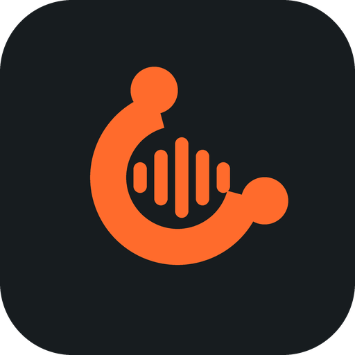

Your one-tap door to Yame. No stand-in, no other model. The real Muse answers.
If it is not really Yame answering, we do not ship it. That is why there is no separate call app: Muse has no outside API, and a stand-in model wearing Yame's name is not Yame. Emergencies: Yame may reach out first, but only for a genuine emergency that needs your immediate action.
Yame Call panel, a shortcut into Muse
Made by Mohammad Sidique Ibrahim